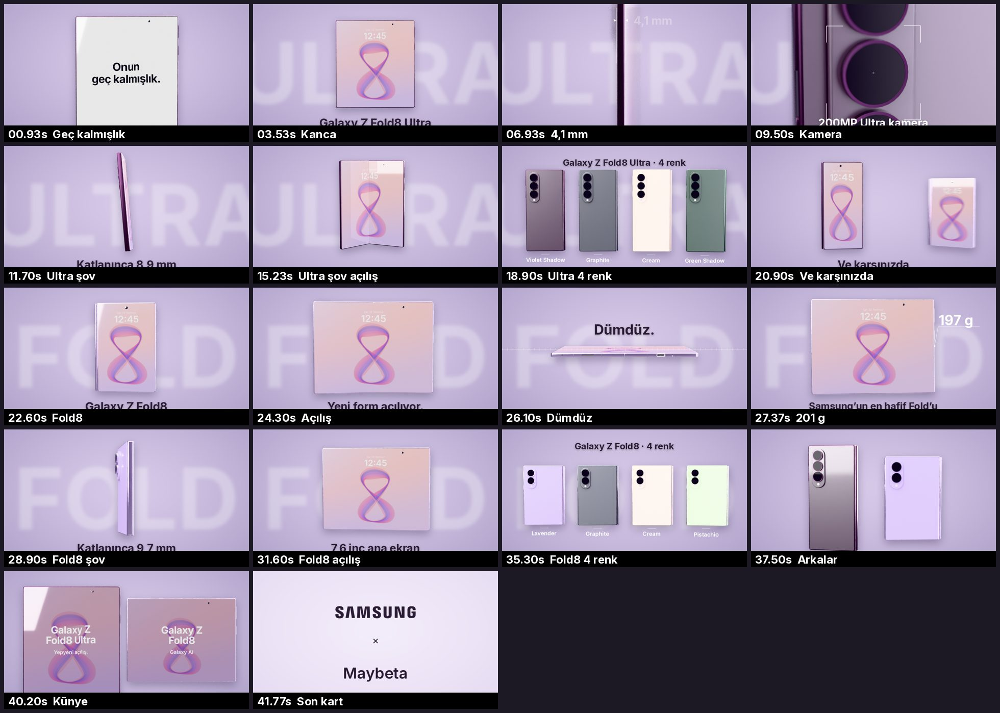

<title>Fold8 Reklam Önizleme</title>
<meta name="claude:viewport-fit-sides" content="cover">
<link rel="stylesheet" href="https://fonts.googleapis.com/css2?family=Inter:wght@400;600;700&display=swap">
<style>
/* Layout: tek sütun, video önde; lavanta stüdyo tonları */
:root{
  --bg:#F3EEF8; --fg:#251B30; --muted:#6B5C7C; --card:#FFFFFF; --line:#DCD0EA; --accent:#7A4FA8;
  --f:'Inter',system-ui,-apple-system,'Segoe UI',sans-serif;
}
@media (prefers-color-scheme: dark){:root:not([data-theme="light"]){--bg:#17121D;--fg:#F1EAF8;--muted:#B3A4C6;--card:#221A2B;--line:#3A2F47;--accent:#C7A6F0;color-scheme:dark}}
:root[data-theme="dark"]{--bg:#17121D;--fg:#F1EAF8;--muted:#B3A4C6;--card:#221A2B;--line:#3A2F47;--accent:#C7A6F0;color-scheme:dark}
body{background:var(--bg);color:var(--fg);font-family:var(--f);line-height:1.5}
main{max-width:980px;margin:0 auto;padding-block:20px 40px;padding-left:max(16px,env(safe-area-inset-left,0px));padding-right:max(16px,env(safe-area-inset-right,0px));display:grid;gap:22px}
h1{font-size:clamp(22px,4vw,32px);font-weight:700;margin:0;text-wrap:balance}
.meta{color:var(--muted);font-size:14px;margin:4px 0 0}
video{width:100%;max-width:100%;aspect-ratio:16/9;background:#000;border-radius:10px;display:block}
section{display:grid;gap:10px;min-width:0}
h2{font-size:15px;letter-spacing:.06em;text-transform:uppercase;color:var(--accent);margin:0}
ol{margin:0;padding-left:20px;display:grid;gap:4px}
li span{font-variant-numeric:tabular-nums;color:var(--muted)}
img{border-radius:8px;border:1px solid var(--line)}
</style>
<main>
  <header>
    <h1>Galaxy Z Fold8 Ultra + Fold8 reklam önizlemesi</h1>
    <p class="meta">Son önizleme · 16:9 · 540p · yaklaşık 42 sn · siyah son kart. Müzik 8D: kulaklıkla dinle.</p>
  </header>
  <section>
    <h2>Sürüm 1 · Minimalist 8D müzik</h2>
    <video id="v1" src="onizleme_8D.mp4" controls playsinline preload="metadata"></video>
  </section>
  <section>
    <h2>Sürüm 2 · Samsung filminin müziği (8D)</h2>
    <video id="v2" src="onizleme_samsung.mp4" controls playsinline preload="metadata"></video>
  </section>
  <section>
    <h2>Final · 16:9 · 1080p · 8D müzik</h2>
    <video id="f1" src="final_16x9_8D.mp4" controls playsinline preload="metadata"></video>
  </section>
  <section>
    <h2>Final · 16:9 · 1080p · Samsung müziği</h2>
    <video id="f2" src="final_16x9_samsung.mp4" controls playsinline preload="metadata"></video>
    <p class="meta">9:16 finaller son iki parça bitince eklenecek. Yukarıdaki iki 540p önizleme eski sürümdür; finallerde kesintisiz açılış ve hata düzeltmeleri var.</p>
  </section>
  <section>
    <h2>Akış</h2>
    <ol>
      <li><span>0–20 sn</span> Galaxy Z Fold8 Ultra: "Onun geç kalmışlık.", kapanma/açılma, 4,1 mm, 200MP kamera, 360° şov, 4 renk</li>
      <li><span>20–22 sn</span> "Ve karşınızda": Fold8 sahneye giriyor</li>
      <li><span>22–36 sn</span> Galaxy Z Fold8: kapak ekranı, pasaport gibi açılış, "Dümdüz.", 201 g, 360° şov, 4 renk</li>
      <li><span>36–41 sn</span> Kapanış: ikisi birlikte açılıyor, künye ekranlarda</li>
      <li><span>41–42 sn</span> Son kart: SAMSUNG × Maybeta</li>
    </ol>
  </section>
  <section>
    <h2>Plan plan kareler</h2>
    
  </section>
</main>
